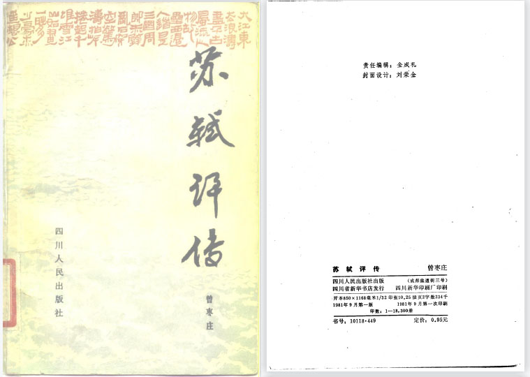

《苏轼评传》是曾枣庄先生为苏轼鸣不平而写。作者认为苏轼一生不仅在文学的各个领域颇富革新精神，而且在政治上也从来没有放弃过他的“丰财”、“强兵”、“择吏”的革新主张，并在他力所能及的范围内，为宋王朝的“丰财”、“强兵”、“择吏”，为巩固宋王朝的统治作了不少工作。他一生光明磊落，直言敢谏，始终坚持自己的政治主张。 |
| 随着宋人对年谱“知人论世”作用认识的提高，在苏轼文集大量编刻的同时，宋人所撰苏轼年谱也日渐增多。明万历时康丕扬所刊《东坡先生外集》卷首云：“谱先生出处岁月者几十家，如汴阳段仲谋、清源黄德粹、五羊王宗稷、仙溪傅荐可，盖特详者，然皆不免差误。”则知明万历以前已有苏轼年谱近十家，为宋代文学家年谱数量之冠。今可考知宋人所编苏轼年谱有如下几种：1、《三苏年表》3卷，孙汝听编，见《直斋书录解题》卷一七，有宋刊本，其中《苏轼年表》明代已佚，《永乐大典》收此书时以王谱代之。2、《眉阳三苏先生年谱》1卷，何抡编，见赵希弁《郡斋读书志・附志》，宋蜀刻本《三苏文》附录。《经进东坡文集事略》卷一《后杞菊赋序》注引一作《三苏先生年谱图》，疑有谱有图，为图谱体。3、《东坡先生行纪》，段仲谋编，见傅藻《东坡纪年录跋》。4、《东坡先生系谱》，黄德粹编，见傅藻《东坡纪年录跋》。5、《东坡诗谱》,程子益编，见魏了翁《鹤山先生大全文集》卷五一《程氏东坡诗谱序》。6、《欧阳三苏年谱》，罗良弼编，见《胡澹庵先生文集》卷二六《会昌县东尉罗迪功墓志铭》。7、《三苏年谱》3卷，李焘编，见周必大《敷文阁学士李文简公焘神道碑》。8、《东坡先生年谱》1卷，王宗稷编，明成化刻本《东坡集》附。（见 苏东坡诗集注 ）9、《东坡纪年录》1卷，傅藻编， 见各种类注本附。（见 宋刻本东坡纪年录）10、《东坡先生年谱》1卷，施宿编，日本昭和四十年同朋舍刊《苏诗佚注》附。（见 施注苏诗）以上年谱除后三种外，其余均已佚。另外，苏辙《东坡先生墓志铭》虽非年谱，但对苏轼生平仕履记载颇详；朋九万《东坡乌台诗案》涉及苏诗47首，这些诗的写作时间跨度从熙宁三年(1070)至元丰二年(1079)，除少数诗歌是首次赴杭之前于京城所作外，大部分诗 作于通判杭州及知密、徐、湖三州时期。¹ |
| 宋人所作苏轼各谱编撰时间均在南宋，距离苏轼的时代不远，其记载较为可信。从刊印形式来说，有单行者，也有随集刊行的，苏轼诗集的每一次编刻，往往有新谱出现。从撰述方式来说，多为文谱，孙汝听的《三苏年表》名曰年表，实为文谱，也有表谱，如施宿的《东坡先生年谱》以表格的形式，分纪年、时事、出处、诗文四栏为苏轼谱年。从编撰体例来说，除常谱之外，还有专谱与合谱，如程子益《苏轼诗谱》专为苏轼的诗谱年；合谱如何抡《眉阳三苏先生年谱》，为苏轼父子三人作谱，以叙述行历及家事为主。从编撰目的来说，有乡人为光耀前贤而编，如孙汝听《三苏年表》、程子益《东坡诗谱》；有为考订、补充史书或前人年谱而编，如傅藻《东坡纪年录》即在段仲谋《行记》、黄德粹《系谱》的基础上“芟夷繁乱，剪载浮辞”而成；有为读者了解作品的写作时间与时代背景而编，如程子益 的《东坡诗谱》为苏诗系年。 |
| 首页 |
|---|
| 画像 |
| 生平 |
| 诗词 |
| 书画 |
| 人物评价研究 |
| 相关书籍推荐 |